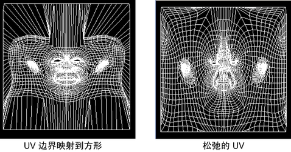
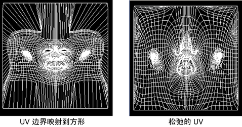

优化 UV 以平均分配 UV 在网格上的间距并修复扭曲的区域（重叠 UV）。例如，您可以结合使用“映射 UV 边界”(Map UV Border)命令来解开内部 UV。首先可以通过将 UV 映射到边界（方形或圆形）来开始，然后松弛 UV 以平均分配 UV 的间距。
使用优化命令松弛 UV
- （可选）在“UV 编辑器”(UV Editor)工具栏中，启用扭曲着色器 (
 )。请参见识别 UV 扭曲。
)。请参见识别 UV 扭曲。
这会着色 UV 网格中挤压或拉伸的区域，从而便于识别需要优化的区域。
- 选择要优化的 UV。
- 在“UV 工具包”(UV Toolkit)中，选择（或者，从菜单栏中选择“修改 > 优化”(Modify > Optimize) >
 以调整选项）。
提示： 您可以多次应用“优化”(Optimize)命令以反复松弛选定 UV。
以调整选项）。
提示： 您可以多次应用“优化”(Optimize)命令以反复松弛选定 UV。 - 也可以选择（或者，从菜单栏中选择），然后使用笔刷以交互方式在要优化的特定区域上绘制。
 注： 在“工具设置”(Tool Settings)中，可以快速在“展开”(Unfold)与“优化工具”(Optimize Tool)之间切换。
注： 在“工具设置”(Tool Settings)中，可以快速在“展开”(Unfold)与“优化工具”(Optimize Tool)之间切换。